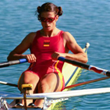

Entrenamiento
Las sesiones de entramiento son fundamentales para adquirir la técnica y la forma física necesaria para la práctica de cualquier deporte. El remo exige un ejercicio regular y unas competencias depuradas para aprovechar al máximo la condición del remero.

Técnica
Para adquirir la técnica adecuada es una gran ayuda aprender de los mejores. A través de explicaciones vídeos y las observaciones de los entrenadores podremos llegar a remar correctamente. ¿Quién dijo que no había que estudiar?

Embarcaciones
Conocer el material que utilizamos en nuestras sesiones de entrenamiento y en las competiciones pude sacarnos de un apuro. Debemos saber con que material trabajamos y como resolver las pequeñas incidencias que pueden ocurrir en una regata.